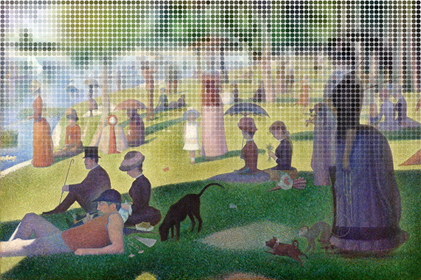

Lazy Loading Pointillism
A placeholder for lazy loaded images.
Medium uses a nice effect for lazy loading images. An extremely low-res image is used to fill the space of the actual image, but a blur filter is applied so we don't see the artifacting. This investigation of how it's done is worth a read. When I was looking into this technique, I started thinking about what else you could do with the low-res copy while the full-size image is loading. One thought was to display the image as a series of dots using colors sampled from the low-res image.
To achieve this effect, the low-res images is drawn on a hidden canvas element, which can then be used to sample colors at the corresponding positions. I'm using div elements for the dots, (though arguably SVG elements could make more sense) so for now, removing the border-radius rule from the dots will display a series of square tiles instead.
The Demos
- Demo 1: A static display of dots
- Demo 2: Randomly animate each dot in when the image enters the viewport
- Demo 3: Lots of flying dots!
The Code
This is a just a prototype, so I wouldn't recommend in its current state for production use (There are some quirks around the dot grid sizes when the window is resized, which could be fixed by using percent-based positioning rather than pixels).